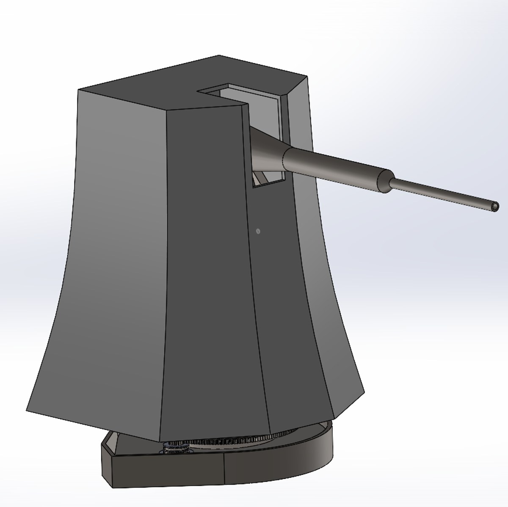
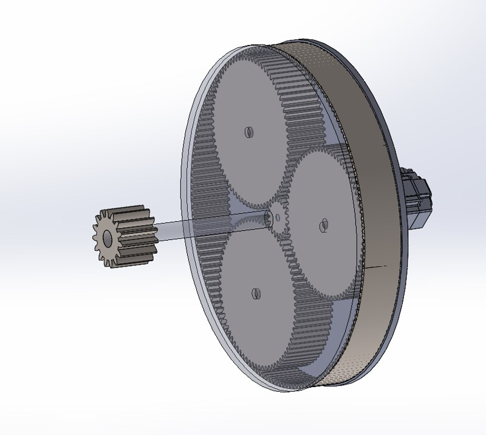
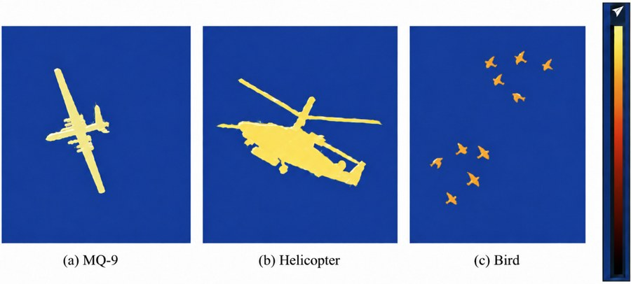
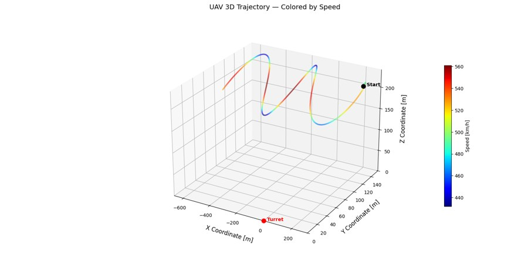

Anti-Aircraft Defence System

Group project (MKM506E — Modeling and Control of Mechatronic Systems, Istanbul Technical University) modeling and controlling a 1:1 scale automated Anti-Aircraft Defense System (AADS) turret based on the OTO 76/62 SR naval platform. Designed to track agile targets like the MQ-9 Reaper UAV within a 5,000 m range, the plant is modeled as a non-linear 2-DOF serial mechanism via Euler-Lagrange dynamics with a Stribeck friction model, driven by a bandwidth-separated cascaded control architecture and a 9-state Extended Kalman Filter (EKF) for lead prediction, and validated end-to-end — perception, estimation and control — inside an NVIDIA Isaac Sim virtual war scenario.
Mechanical Design & Transmission

The turret's azimuth and elevation axes are each driven by a single Bosch Rexroth MS2N07-E0BN PMSM servo motor (119.5 Nm peak, 37.5 kW) through two cascaded epicyclic (planetary) stages plus a final output stage, reaching overall ratios of 300:1 (azimuth, via a slewing-ring pinion) and 500:1 (elevation, via a pinion/idler/sector-gear stage covering a 60° range). Motor sizing was verified against the required output torque for both axes (up to 43.4 kNm at the elevation output), reaching 63–100% motor utilization depending on the axis. All gearing and structure are specified in AISI 17-4 PH precipitation-hardened stainless steel for high yield strength and dimensional stability.
Sensor Suite & Perception Pipeline

Target cueing fuses a K-band MESA (Metamaterial Electronically Scanned Array) radar for initial spatial detection with an LWIR thermal payload and an RGB camera. A YOLOv8n detector, trained on a 24,999-image synthetic dataset generated directly in Isaac Sim (630k+ auto-labeled bounding boxes across MQ-9, bird, helicopter and fighter-aircraft classes), classifies airborne contacts, while a Lucas-Kanade optical-flow motion-consistency check on a second camera viewpoint guards against false associations with distractor objects before a detection is accepted.
Tracking, Estimation & Control
Confirmed detections feed a 9-state Extended Kalman Filter using a discrete white-noise jerk motion model and an innovation-based adaptive measurement-noise scheme (inflating trust in the kinematic model when radar returns are erratic), which projects the target's state 2 frames (≈33 ms) ahead to compensate for sensor and mechanical latency. The turret itself is controlled through a bandwidth-separated cascaded architecture — inner current loop (ωi = 600 rad/s), middle velocity loop (ωv = 60 rad/s) and outer position loop (ωp = 5 rad/s) — with gravity and velocity feedforward compensation, eliminating stick-slip limit cycles and cross-axis coupling.
Isaac Sim Validation & Results

The full perception-estimation-control chain was closed inside NVIDIA Isaac Sim against evasive UAV trajectories (example on the left). The YOLOv8n detector reached 0.793 precision / 0.389 recall (mAP@0.5 = 0.407) after 20 training epochs; optical flow was valid on 98% of frames and never rejected an accepted detection in the logged engagement. Using radar-only measurements, the EKF's lead prediction cut RMS tracking error by roughly 60% versus simply holding the last measurement (down to 3.7–6.0 m Cartesian RMS at the 33 ms prediction horizon), and the closed-loop turret controller settled to a steady-state pointing RMS of 3.6° azimuth / 1.8° elevation after the initial acquisition transient.
Tools and Technologies
- Simulation & Control: MATLAB, Simulink, Simscape Multibody, NVIDIA Isaac Sim
- Computer Vision: Python, YOLOv8, OpenCV (Lucas-Kanade optical flow)
- Key Concepts: Euler-Lagrange multibody dynamics, cascaded bandwidth-separated control, Extended Kalman Filtering, sensor fusion